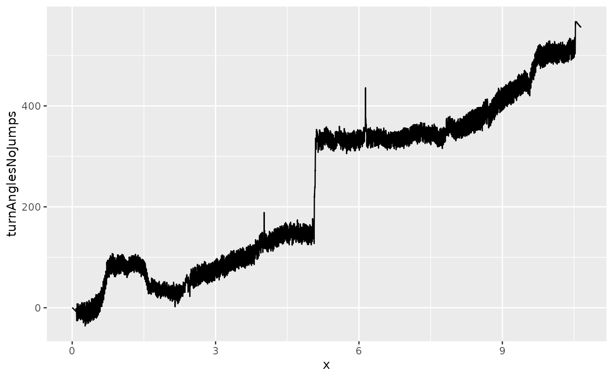

Introduction
The imuf package performs sensor fusion for an inertial measurement unit (IMU) that has a 3-axis accelerometer and a 3-axis gyroscope.
Specifically, compUpdate() uses complementary
filtering to estimate the sensor’s final orientation, given its
initial orientation, sensor readings of accelerations and angular
velocities at a time point, time duration between data samples, and a
gain factor (between 0 and 1) specifying the weighting of the
accelerometer measurements.
This vignette describes how one may use the imuf package to analyze a real world dataset of IMU measurements.
Data
The walking_shin_1 dataset contains 31,946 rows of
sensor readings. Each reading consists of 3 accelerations (m/s^2) and 3
angular velocities (rad/sec) measurements for north (x), east (y), and
down (z) directions. The data sampling rate is 50 Hz, which translates
to a time duration of 0.02 second between readings.
head(walking_shin_1)
#> # A tibble: 6 × 6
#> acc_x acc_y acc_z gyr_x gyr_y gyr_z
#> <dbl> <dbl> <dbl> <dbl> <dbl> <dbl>
#> 1 -1.44 0.803 -10.0 -0.0238 0.00244 -0.0406
#> 2 -1.40 0.785 -9.94 -0.0177 0.00336 -0.0211
#> 3 -1.36 0.784 -9.95 -0.0195 0.00183 -0.0159
#> 4 -1.33 0.746 -9.97 -0.0223 -0.00275 -0.0162
#> 5 -1.32 0.724 -9.96 -0.0241 -0.000916 -0.0238
#> 6 -1.39 0.785 -9.97 -0.0186 -0.00367 -0.0312To prepare for subsequent analyses, we first convert the dataframe to a list:
lst_ned_in <- as.list(as.data.frame(t(walking_shin_1))) %>% unname
head(lst_ned_in, 2)
#> [[1]]
#> [1] -1.440710900 0.803254660 -9.996989000 -0.023823744 0.002443461
#> [6] -0.040622540
#>
#> [[2]]
#> [1] -1.398812300 0.785298170 -9.943120000 -0.017715093 0.003359759
#> [6] -0.021074850Orientation update
We will now look at how to update our sensor orientation given the IMU measurements. We will do that in 3 steps:
- Create a helper function
- Update sensor orientation for one IMU reading
- Update sensor orientation for a list of IMU readings
Helper function
We first wrap compUpdate() in a helper function:
myCompUpdate <- function(initQ, accgyr) {
acc <- accgyr[1:3]
gyr <- accgyr[4:6]
dt <- 1/50
gain <- 0.1
orientation <- compUpdate(acc, gyr, dt, initQ, gain)
orientation
}Orientation update for one IMU reading
Next, we use the helper function to process the first two sensor readings in our dataset. For the processing of the first reading, we simply assume that the sensor’s initial orientation is aligned with the world frame. However, for the procesing of the second reading, we take the output of the processing of the first reading as the inital orientation.
(q1 <- myCompUpdate(c(1, 0, 0, 0), lst_ned_in[[1]]))
#> [1] 0.9999657701 -0.0041990423 -0.0071175965 -0.0004080098
(q2 <- myCompUpdate(q1, lst_ned_in[[2]]))
#> [1] 0.9998798598 -0.0078567189 -0.0133472834 -0.0006228269Orientation update for multiple IMU readings
Now we will process the entire list of IMU readings. To do that we
take advantage of purrr::accumulate() which automatically
takes the output of the current iteration as the input to the next
iteration:
orientations <- purrr::accumulate(lst_ned_in, myCompUpdate, .init = c(1, 0, 0, 0))
head(orientations, 5)
#> [[1]]
#> [1] 1 0 0 0
#>
#> [[2]]
#> [1] 0.9999657701 -0.0041990423 -0.0071175965 -0.0004080098
#>
#> [[3]]
#> [1] 0.9998798598 -0.0078567189 -0.0133472834 -0.0006228269
#>
#> [[4]]
#> [1] 0.9997609096 -0.0111531161 -0.0187912870 -0.0007868925
#>
#> [[5]]
#> [1] 0.9996243467 -0.0139555857 -0.0235688255 -0.0009578893Note that the length of the output list is one more than that of the
input list, with the extra element being the initial quaternion of
c(1, 0, 0, 0).
Application of orientations
The result of the previous step is a list of sensor orientations expressed as unit 4-vector rotation quaternions. We can use these rotation quaternions to transform any vector in the sensor’s body frame into the world frame.
Since the walking_shin_1 dataset comes a sensor strapped
onto the shin of a subject while she walked for 10 minutes, as an
illustration we will use the sensor orientations to study the turns
taken by the subject during her journey.
We will do that in 3 steps:
- Use
rotV()to transform a vector from body frame to world frame - Create a function to calculate the turn angle
- Compute the turn angles at every time point
Vector transformation
We can transform any vector from the body frame to the world frame by
rotating the vector by the orientation of the sensor.
rotV() performs such a rotation. For example, rotating a
vector pointing in the east-direction (c(0, 1, 0)) about
the north-direction by 90 degrees results in a vector pointing in the
down-direction (c(0, 0, 1)):
Turn angle function
Next, we write a function to compute the turn angle from the rotated vector:
getTurnAngle <- function(quat) {
# a function to rotate c(1, 0, 0) by quat
# and then compute the angle between (1, 0, 0) and the rotated vector
# projected onto the n-e plane and
# this construct is to detect turns
rotVec <- rotV(quat, c(1, 0, 0))
theta <- atan2(rotVec[2], rotVec[1]) * 180 / pi
theta
}Turn angles for all time points
Lastly, we compute all the turn angles using
purrr::map():
Analyses of turn angles
Let’s take a look at the results:
#
# create a vector of time stamps in minutes
# note that sampling frequency is 50 Hz
x <- 1:length(turnAngles) / 50 / 60
#
ggplot2::ggplot(mapping = aes(x = x, y = turnAngles)) + ggplot2::geom_line()There are some sharp jumps in the turn angles. And the reason for
that is atan2() restricts the angles to -180 and +180. So
an angle of 181 becomes -179 breaking continuity. We can use a function
to remove those artificial jumps and maintain continuity:
#
# a function to remove artificial jumps in turn angles
rmJumps <- function(theta) {
firstDiffs <- diff(theta)
bigDiffIdx <- which(abs(firstDiffs) > 100)
#
# fix #1
theta[(bigDiffIdx[1]+1):bigDiffIdx[2]] <- theta[(bigDiffIdx[1]+1):bigDiffIdx[2]] + 360
#
# fix #2
theta[(bigDiffIdx[3]+1):bigDiffIdx[4]] <- theta[(bigDiffIdx[3]+1):bigDiffIdx[4]] + 360
#
# fix #3
theta[(bigDiffIdx[4]+1):length(theta)] <- theta[(bigDiffIdx[4]+1):length(theta)] + 2*360
theta
}
#
# remove artificial jumps
turnAnglesNoJumps <- rmJumps(turnAngles)
#
# plot it
ggplot2::ggplot(mapping = aes(x = x, y = turnAnglesNoJumps)) + ggplot2::geom_line()
There remains some jumps in turn angles. But these jumps are not artificial. They reflect the actual behaviors of the subject during her journey. For example, at 5 minute mark, the data suggests she made a 180 degree turn. And this can indeed be confirmed by the video.